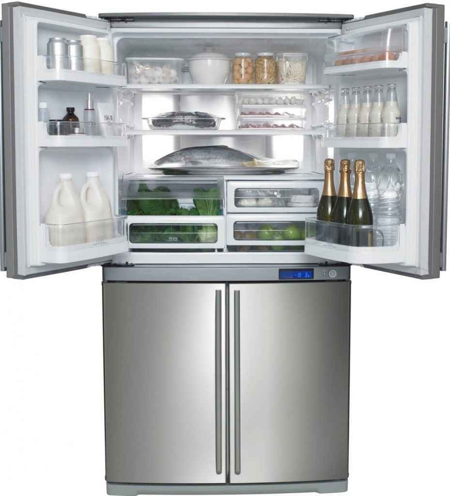
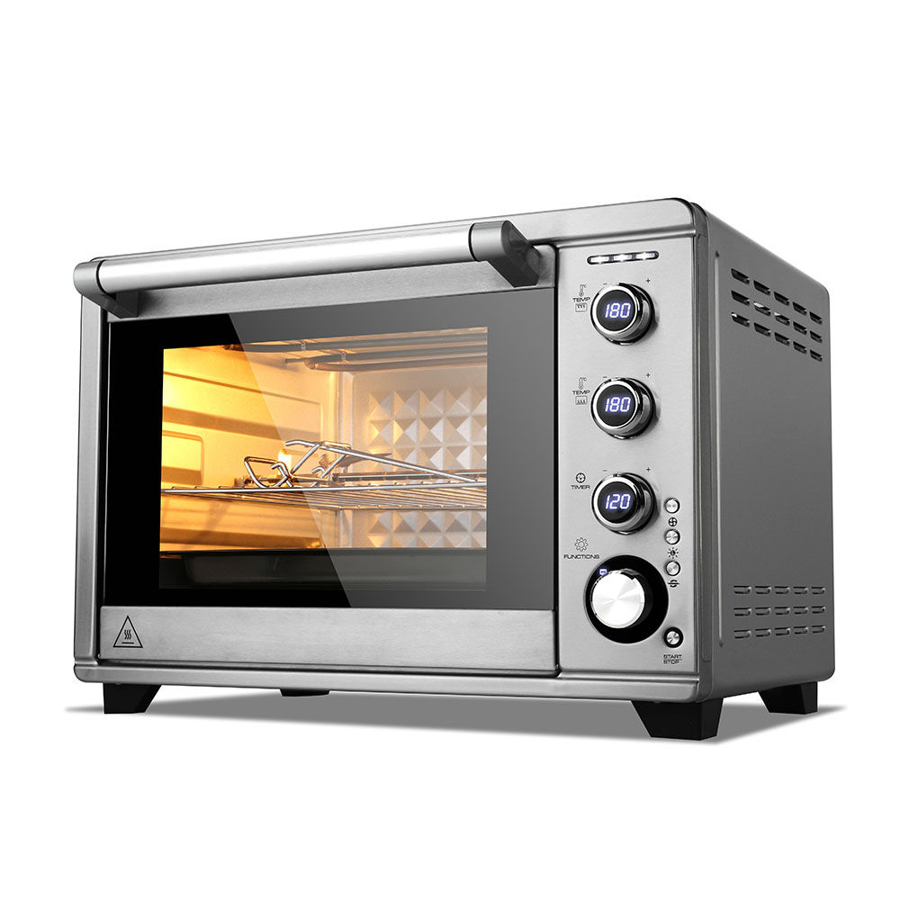
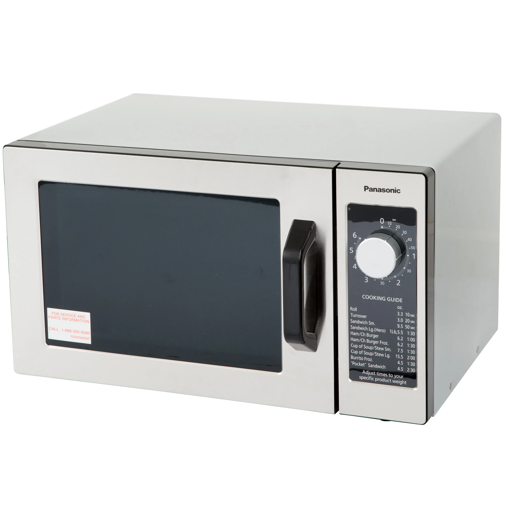
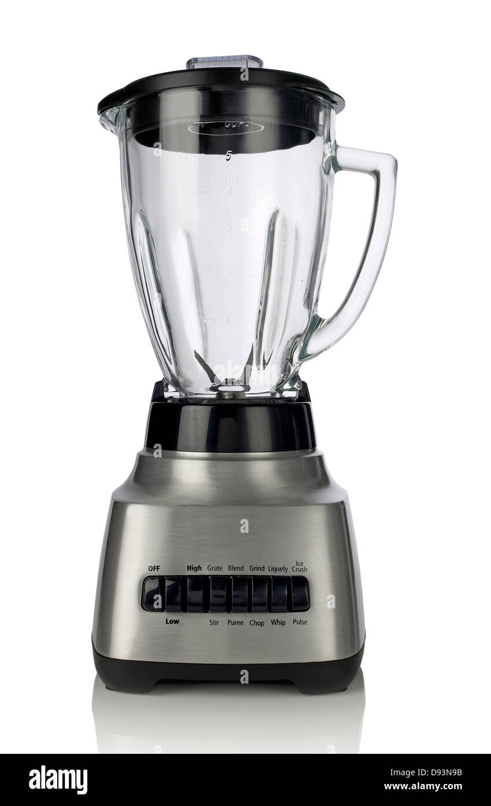

-

Safety: Unplug or switch to “vacation” only if recommended for deep cleaning; for quick cleaning you may leave it plugged in.
- Remove all food, discard expired items; place perishables in a cooler.
- Remove shelves, drawers, and door bins. Wash them in warm soapy water; rinse and air dry.
- Wipe interior walls and gasket using warm water + dish soap. For stains, scrub gently with a baking soda paste.
- Clean door gasket (rubber seal) with soapy water or diluted vinegar; use a toothbrush.
- Wipe exterior; for stainless steel, wipe with the grain using a microfiber cloth.
- Replace shelves/drawers, return food, reset temperature if changed.
Frequency: Wipe spills ASAP; full clean every 1–3 months.
-

Safety: Ensure all burners are off and completely cool.
- Remove grates and burner caps; soak in hot soapy water (or vinegar + baking soda).
- Scrape burnt food gently; wipe surface with warm soapy water.
- Use baking soda paste on stubborn spots; let sit 10–15 minutes before scrubbing.
- Dry and replace burner parts; wipe knob area carefully (avoid excess water).
Frequency: Wipe daily; deep clean weekly or as needed.
-

Safety: Oven must be off and cool. For self-cleaning mode, follow the manual.
- Remove racks; soak and scrub in hot soapy water.
- Sprinkle baking soda inside, spray with water, let sit for several hours or overnight.
- Scrub and wipe clean; use oven cleaner only if needed and ventilate well.
- Clean door glass with glass cleaner or vinegar solution.
- Dry and replace racks.
Frequency: Clean spills ASAP; deep clean every 3–6 months.
-

Safety: Unplug if possible; avoid spraying liquids directly on controls.
- Heat water + vinegar (or lemon slices) for 3–5 minutes to create steam; let sit.
- Wipe interior with microfiber cloth.
- Remove and wash turntable; dry and replace.
- Wipe exterior and panel; use cotton swabs for crevices.
Frequency: Wipe weekly or after splatters.
-

Safety: Unplug before disassembly.
- Fill jar with warm water + dish soap; run for 30 seconds.
- Rinse thoroughly; scrub stubborn areas with baking soda.
- Detach blades (if removable) and wash parts by hand; dry fully.
- Wipe motor base with a damp cloth; never submerge.
Frequency: Clean after every use.
-

Safety: Unplug and allow to cool.
- Remove inner pot; wash in warm soapy water.
- Wipe inner lid, steam vent, and gasket with a damp cloth.
- Check heating plate for stuck rice; remove gently.
- Dry and reassemble.
Frequency: Clean after each use; deep clean vents monthly.
-

Safety: Unplug before cleaning.
- Wash carafe and filter basket in warm soapy water.
- Descale monthly with 1 part vinegar to 2 parts water; run rinse cycles.
- Wipe exterior and warming plate.
- Clean water reservoir (if removable).
Frequency: Rinse daily; descale every 1–3 months.
-

Safety: Unplug; do not immerse the base.
- Descale with equal parts water + vinegar; boil, sit 15–30 minutes, rinse well.
- Wipe exterior dry.
- Clean spout/lid with brush; remove sediment inside.
Frequency: Descale every 1–3 months (more for hard water).
-

Safety: Unplug and cool fully.
Toaster:
- Remove crumb tray; empty and wash.
- Shake toaster upside-down over trash.
- Wipe exterior.
Toaster Oven:
- Remove racks/trays; soak if greasy.
- Wipe interior with soapy water or baking soda paste (avoid heating elements).
- Clean crumb tray and exterior.
Frequency: Empty crumb tray weekly; deep clean monthly.
-

Safety: Power off or unplug only if doing deeper maintenance.
- Remove and clean filter.
- Wipe gasket and door edges.
- Place a cup of vinegar on top rack; run hot cycle.
- Sprinkle baking soda on bottom; run short cycle (optional).
- Clean spray arms; unclog holes with a toothpick.
Frequency: Clean filter weekly; vinegar cycle monthly.